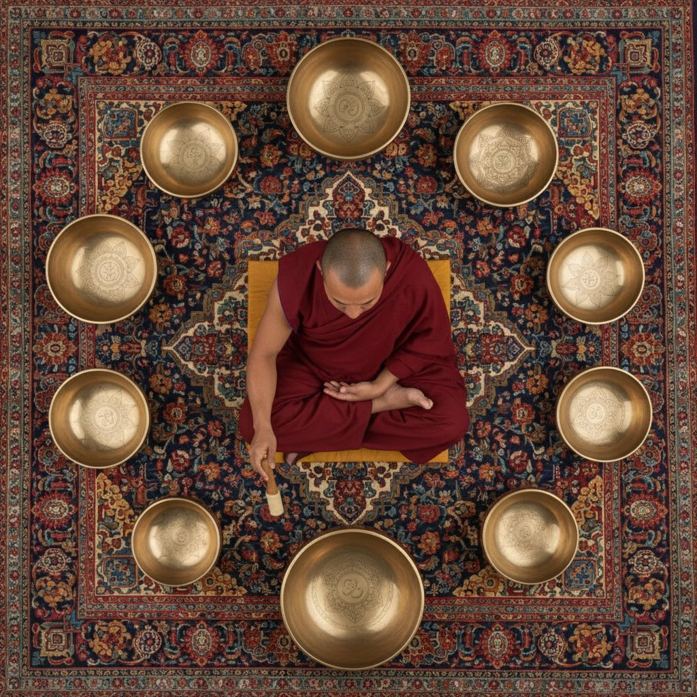

Sound Meditation
'Echoes of Silence' lets you meditate with the sounds of authentic Tibetan singing bowls. Press Begin and an endless soundscape unfolds: bowls, bells and drones in an order and rhythm that is never the same twice, slowly drifting between deeper and brighter tones and between two harmonic moods. Press End when you are done, or choose a session length and a closing bell will see you out.
The sounds are adapted from recordings by Kasper and include over 15 different tones. Koshi chimes from FreeSound.
For the best experience, listen with headphones at low volume for at least five minutes while focusing on your breath. This app will always be free, ad-free, and dedicated solely to well-being 🙏.
Space begin / end · ↑↓ volume